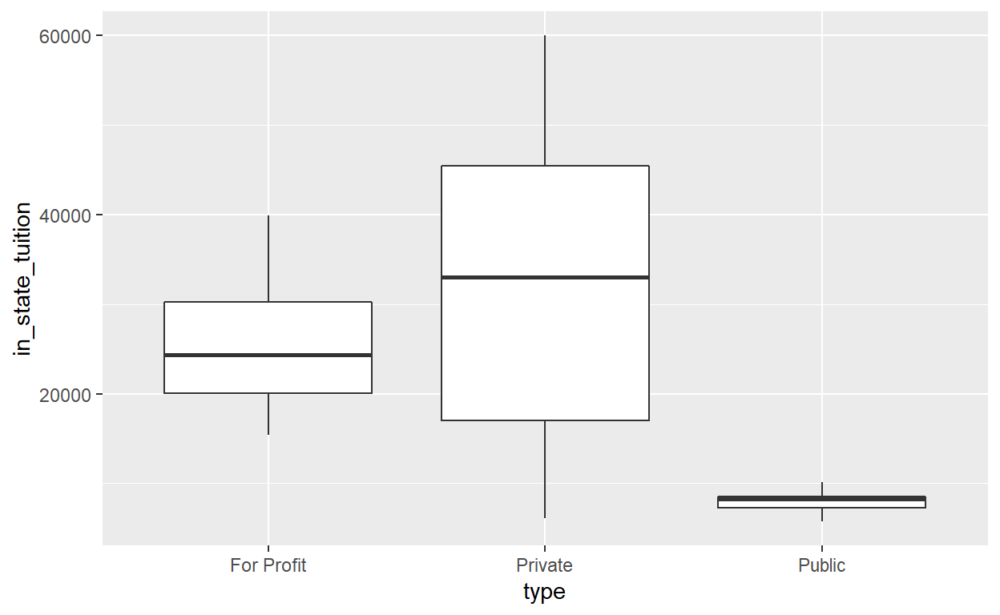
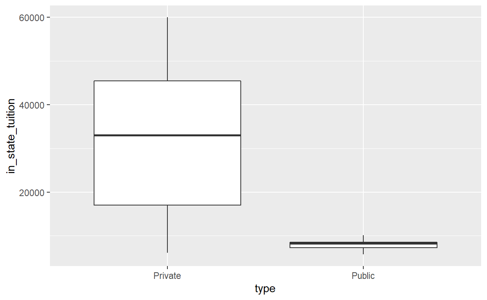

So you want to data wrangle?
Today we are going to work with college tuition data to put things into perspective and answer the questions: Is college really worth it?
Most of this data originally comes from the US Department of Education, but the most easily accesible form of it was found on Tuitiontracker.org.This data contains information about the costs for all types of students, in-state, out-of-state, etc., from all types of schools. It also goes into the diversity of the schools and the salaries of alumni. Let’s dig in!
Below you will see the data and packgaes used in this tutorial:
tuition_cost <- readr::read_csv('https://raw.githubusercontent.com/rfordatascience/tidytuesday/master/data/2020/2020-03-10/tuition_cost.csv')
tuition_income <- readr::read_csv('https://raw.githubusercontent.com/rfordatascience/tidytuesday/master/data/2020/2020-03-10/tuition_income.csv')
salary_potential <- readr::read_csv('https://raw.githubusercontent.com/rfordatascience/tidytuesday/master/data/2020/2020-03-10/salary_potential.csv')
historical_tuition <- readr::read_csv('https://raw.githubusercontent.com/rfordatascience/tidytuesday/master/data/2020/2020-03-10/historical_tuition.csv')
diversity_school <- readr::read_csv('https://raw.githubusercontent.com/rfordatascience/tidytuesday/master/data/2020/2020-03-10/diversity_school.csv')
library(tidyverse)
library(learnr)First let’s look at the main tuition_cost table:
head(tuition_cost)I live in New York, so I am intersted in looking at just schools in New York. I also just want to look at 4 year schools. I can do this by using the filter function:
tuition_cost_NY = tuition_cost %>% #This pipeline operator is used to "pipe" any data through a function
filter(state == 'New York') %>% #This tells R to only keep data where the "state" vector equals "New York"
filter(degree_length == "4 Year")
head(tuition_cost_NY)Now let’s say that I am only interested in the tuition cost, because I know that room and board is going to be about the same price and just vary based on location.I can only show the columns that I care about, and then I can rearrange the table by in_state_tuition:
tuition_cost_NY = tuition_cost_NY %>%
select(name,type, in_state_tuition, out_of_state_tuition) %>% #note that the order you write the selected columns is the order they will appear
arrange(in_state_tuition) #If I wanted to see the most expensive schools at the top, I could order it in descending order using desc(in_state_tuition)
head(tuition_cost_NY)Notice that most of the schools at the top of the data frame are state schools. It’s hard to find trends in data just scrolling through a table though, so let’s visualize this! Plots can also be made using pipelines:
tuition_cost_NY %>%
ggplot(aes(x = type, y = in_state_tuition)) + geom_boxplot()
It’s a good thing we made a chart because I completely forgot about the “For Profit” category of schools! Let’s see how many there are of each type of school in NY using the count() function.
tuition_cost_NY %>%
count(type)Only four, but I’m annoyed that they exist at all! I would never consider a For-Profit school, so I am going to remake the boxplot without that variable:
tuition_cost_NY %>%
filter(type %in% c('Private', 'Public')) %>% #notice that I used the %in% operator to filter with 2 variables
ggplot(aes(x = type, y = in_state_tuition)) + geom_boxplot()
Wow! At first glance, this REALLY builds the case for going to a public school. The wide range for Private interests me though…and in the next section, we will get financial aid involved in our decision.
Before we go on though, try exercise 1:
#This is using California, Mississippi, Massachusetts, Texas, and Nevada. You can use any states you are interested in, but you can substitute these states into your own code to see if you get the same answers
tuition_cost_5 = tuition_cost %>%
filter(state %in% c('California', 'Mississippi', 'Massachusetts', 'Texas', 'Nevada')) %>%
filter(type == 'Public') %>%
select(name, state, in_state_tuition) %>%
arrange(desc(in_state_tuition))
head(tuition_cost_5)
tuition_cost_5 %>%
ggplot(aes(x = state, y = in_state_tuition)) + geom_boxplot()One of the first considerations people make are if they will go to a private school or a public school. However, the same person might make a different decision depending on what state they live in.How do you see the average price of a school by state though?
This is when the group-by and summarize function come in
Here’s a simple exercise with an empty code chunk provided for entering the answer.
Write the R code required to add two plus two:
Here’s an exercise with some prepopulated code as well as exercise.lines = 5 to provide a bit more initial room to work.
Now write a function that adds any two numbers and then call it:
add <- function() {
}Here’s an exercise where the chunk is pre-evaulated via the exercise.eval option (so the user can see the default output we’d like them to customize). We also add a “hint” to the correct solution via the chunk immediate below labeled print-limit-hint.
Modify the following code to limit the number of rows printed to 5:
mtcarshead(mtcars)You can include any number of single or multiple choice questions as a quiz. Use the question function to define a question and the quiz function for grouping multiple questions together.
Some questions to verify that you understand the purposes of various base and recommended R packages:
quiz(
question("Which package contains functions for installing other R packages?",
answer("base"),
answer("tools"),
answer("utils", correct = TRUE),
answer("codetools")
),
question("Which of the R packages listed below are used to create plots?",
answer("lattice", correct = TRUE),
answer("tools"),
answer("stats"),
answer("grid", correct = TRUE)
)
)